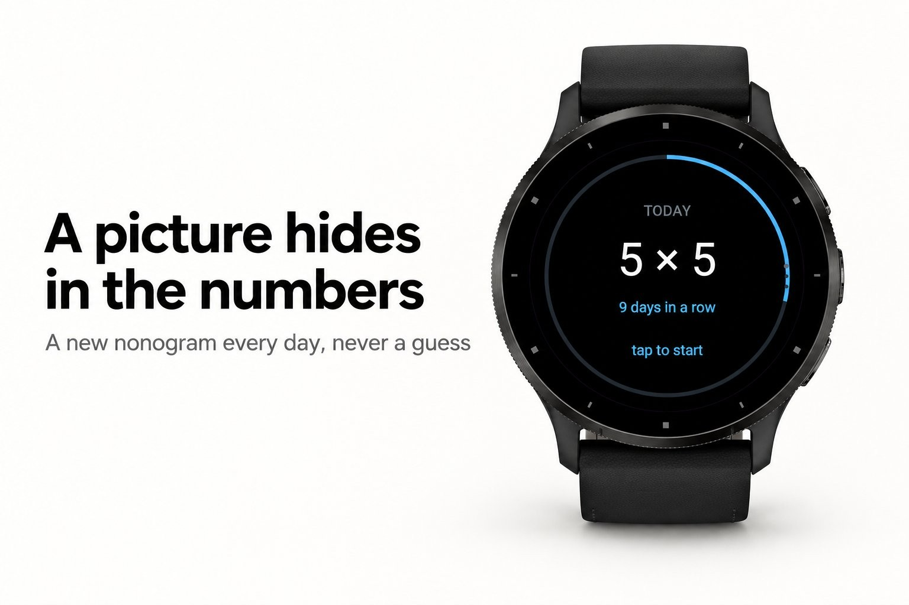
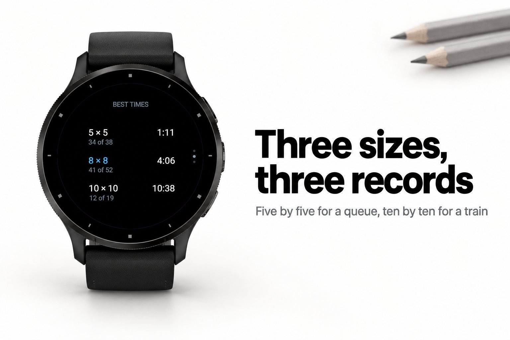
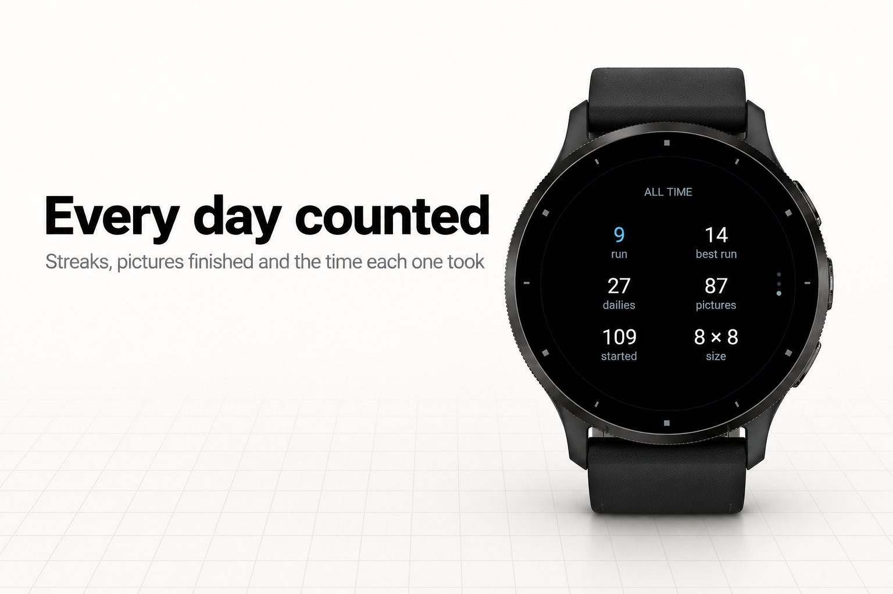
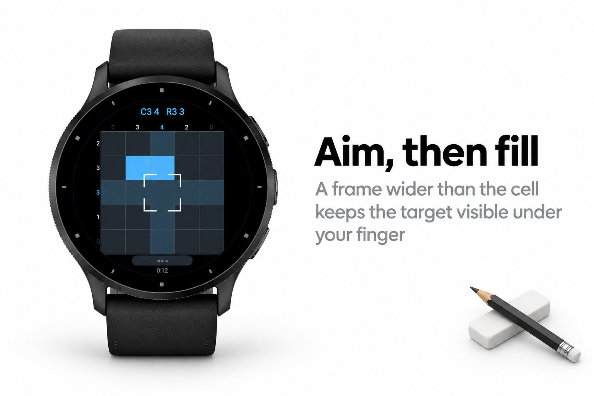
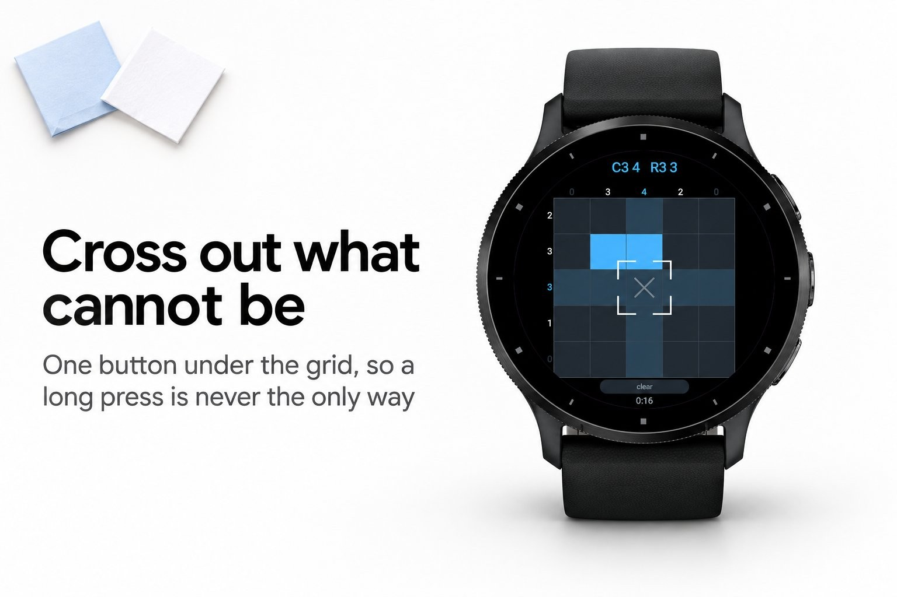

Games & puzzles · Device app
A picture cross puzzle, new every day.





Most picture cross puzzles are generated rather than written, and a generated one
usually has a hole in it: a place where two arrangements both fit the numbers and the
only way on is to pick one. Half an hour of careful counting, and then a coin toss.
Pixara does not show a picture until a line solver has finished it from a blank grid.
That solver does only what a person does with a strip of cells and a list of block
lengths: work out every arrangement the numbers still allow, keep the cells that are
filled in all of them, cross out the cells that are empty in all of them, and go round
the rows and columns until nothing changes. If it stalls, that picture is thrown away
and another is painted. A solver that finishes also proves the answer unique, so the
picture the numbers describe is the only picture there is.
enlarged, because a paper clue strip does not fit round glass
around a fingertip; the second fills it, holding it crosses it out
through the three sizes
Nothing but the watch. No phone, no signal, no account.